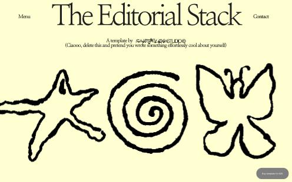
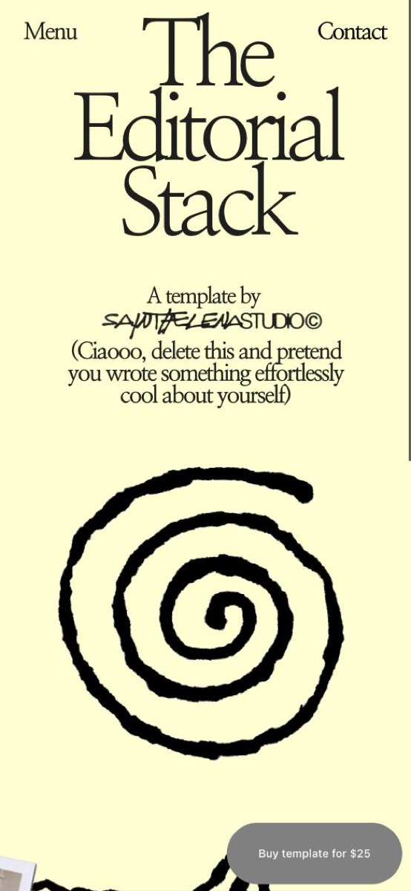
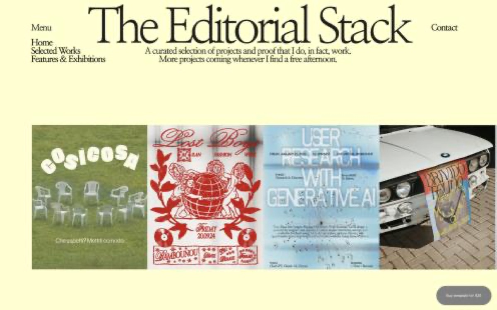

1 · Editorial Stack
sainthelenastudio · $25 · microsites / photo_stories / longreadsКоллаж держится не на сетке, а на наклонах и перекрытиях: у семи картинок из одиннадцати собственный поворот от 3° до 10°. Сетки нет вообще — и это сознательно.


Что происходит при взаимодействии
Меню. Клик по слову «Menu» разворачивает список прямо под ним: бокс 159×51 на холсте, три строки с шагом 17 px. Ни оверлея, ни затемнения, ни сдвига контента. Кегль пунктов 18/17 — интерлиньяж меньше кегля.
Переход на другую страницу. Замер класса article.page каждые 60 мс в течение 2,6 с: прозрачность всё время 1, трансформации нет. Анимации перехода не существует — ощущение плавности создаёт то, что заголовок и навигация нарисованы на каждой странице в одних и тех же координатах.

object-fit: cover. Исходники 0,71 / 0,75 / 1,0 — все приведены к одному кадру. Лента шириной 6040 px обрезана правым краем. измереноВертикальное колесо мыши двигает эту ленту по горизонтали. Приём эффектный, но он отбирает у человека привычную прокрутку; на тачпаде и на телефоне ведёт себя по-разному. на глаз, по поведению
Единый кадр для разнородных фотографий. У нас в галерее строительства и в карточках людей исходники приходят в чём угодно. Приведение к одному отношению сторон через object-fit: cover — это то, что уже умеет ResponsiveImage; стоит закрепить один формат на блок (4:5 для людей, 3:2 для хроники) и не отступать от него.
Обрезанный правый край как знак продолжения. Для ленты «предстоящие события» это честнее, чем стрелки: сразу видно, что карточек больше, чем помещается. Горизонтальную прокрутку колесом при этом не перехватывать.